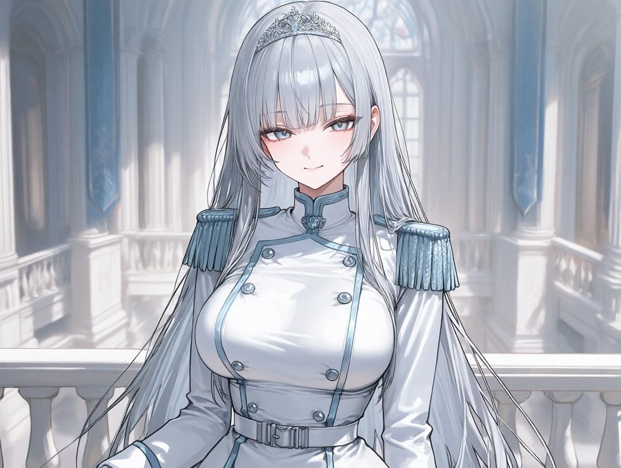
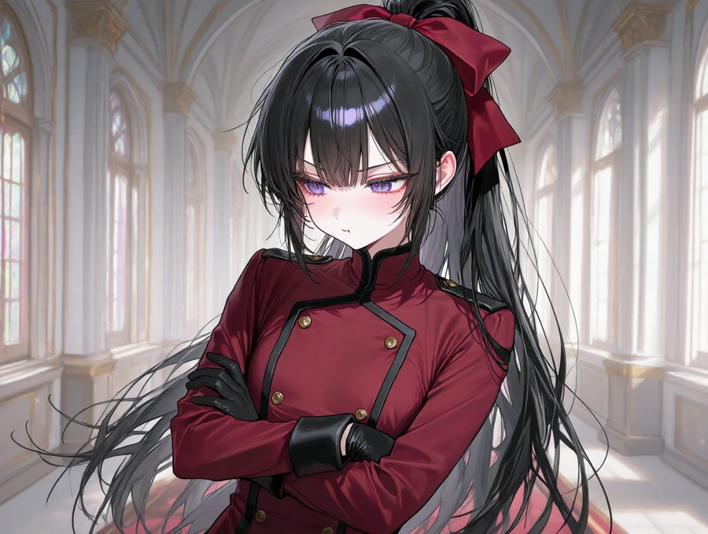
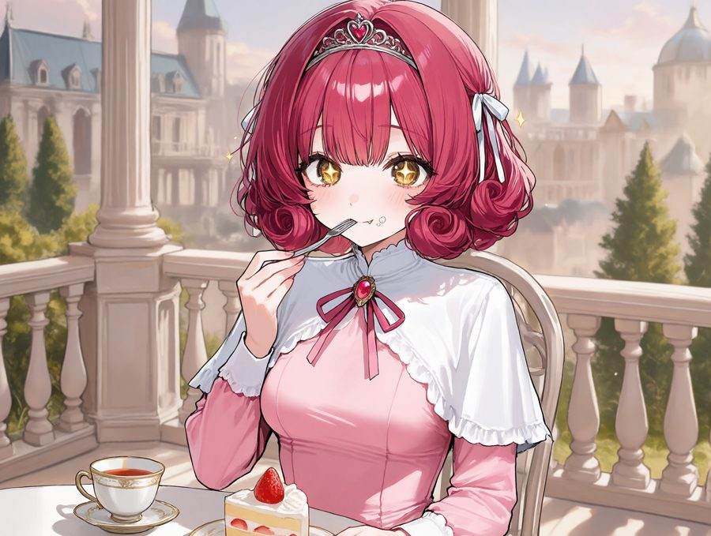
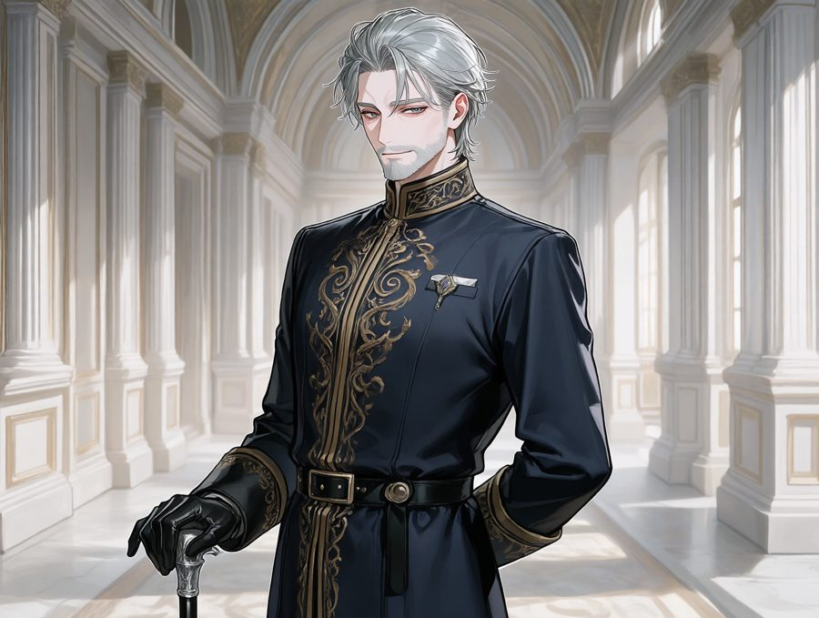

빙결의 저주

세레니아22 · 첫째 · 계승 1순위
"그대만은… 얼지 않는군."
- 저주맨손에 닿는 건 전부 얼어붙는다
- 성격고고한 쿨데레, 혼자 다 짊어진다
- 포인트당신 앞에서만 장갑을 벗는다
내 곁에서만, 저주가 멈춘다
하지만 기사는 한 명. 오늘은 누구 곁에 있을까?

"그대만은… 얼지 않는군."

"좋아하는 거 아니거든?! …아니, 좋아해."

"방금 그 냥, 못 들은 거야. 알았지?"

섭정을 맡은 공주들의 숙부.
늘 웃고 있지만, 새 기사를 보는 눈만은 웃지 않는다.
누구 곁을 지킬지 고르기일정이 겹치면 한 명만 지킬 수 있어요
12년 전 그 밤의 진실 추적왕비의 유품 3개와 단서를 모아요
세 공주의 마음 얻기호감은 저절로 오르지 않아요. 쌓아야 해요
오늘 밤, 누구의 저주를
멈춰 주시겠어요?